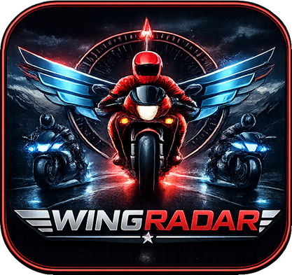
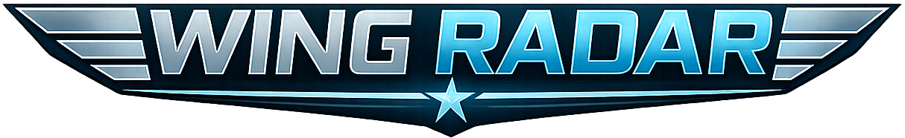
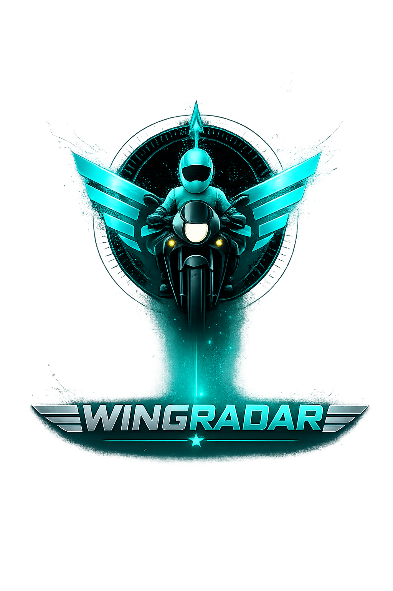

Live group context
Riders can create or join active ride sessions using ride codes and understand where the active squad is during a ride.


Ride coordination for active squads
WingSync is built for active ride visibility, leader and rider coordination, formation awareness, and practical squad status without hidden tracking or exaggerated claims.

Overview
Riders can create or join active ride sessions using ride codes and understand where the active squad is during a ride.
WingSync supports coordination between the ride leader and participating riders so the group has a shared operational view.
Active ride-only location sharing is intended only for riders participating in the same ride session.
Safety first
WingSync is a coordination aid. Riders remain responsible for safe riding, traffic laws, road conditions, group etiquette, and their own decisions. Do not use a phone while riding or driving.